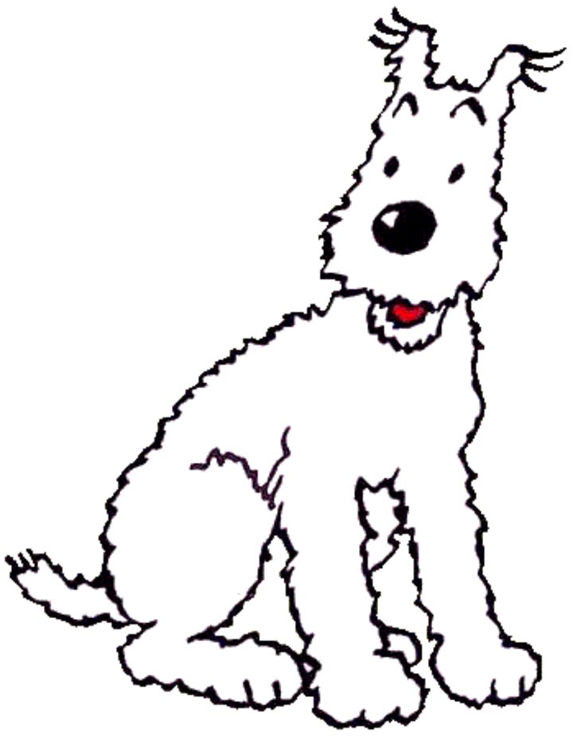
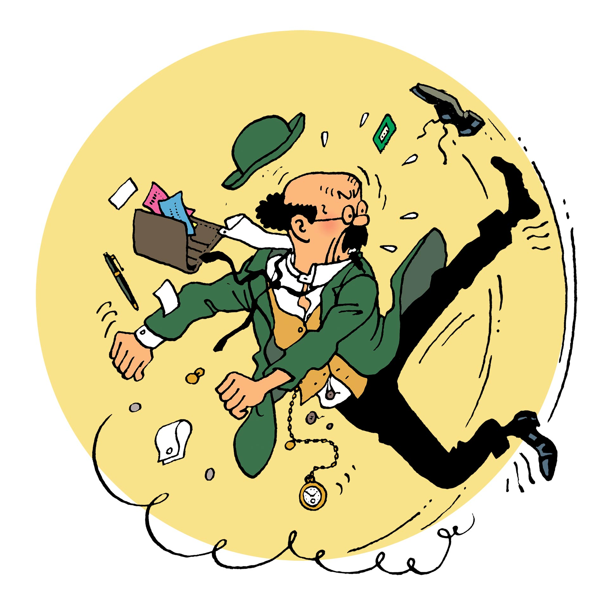
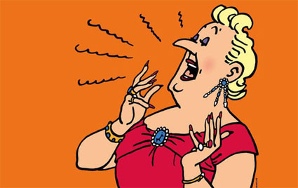
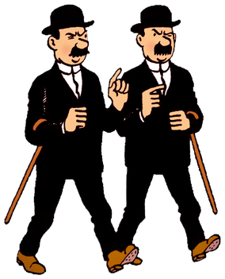
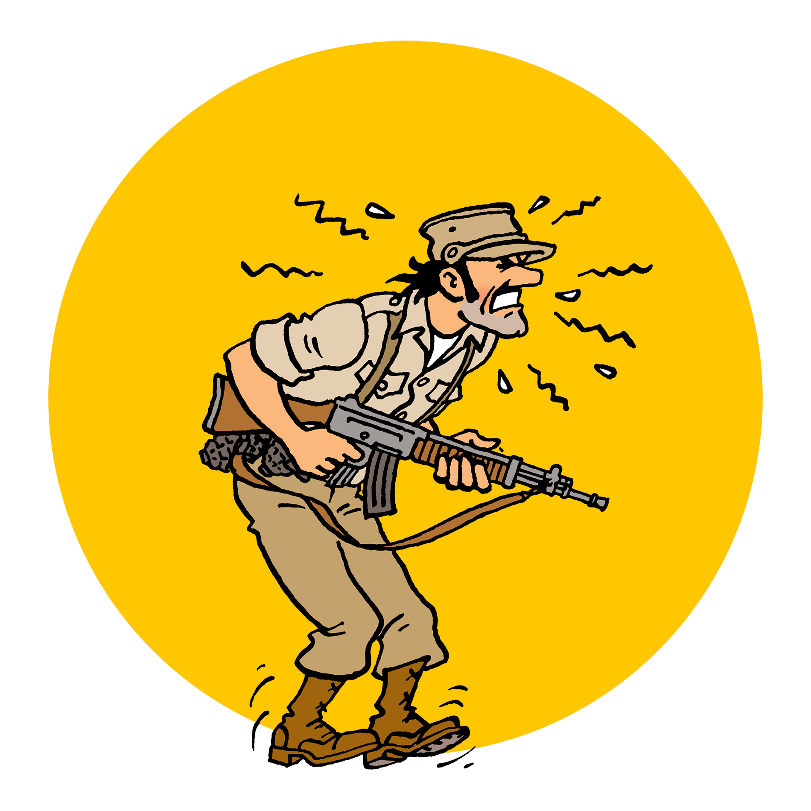
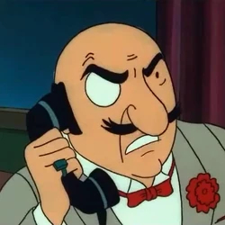
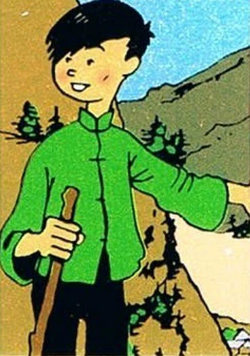
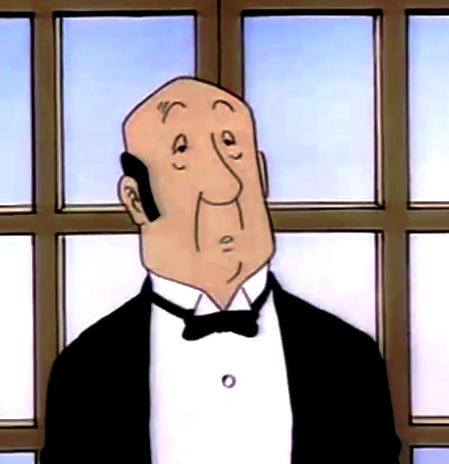
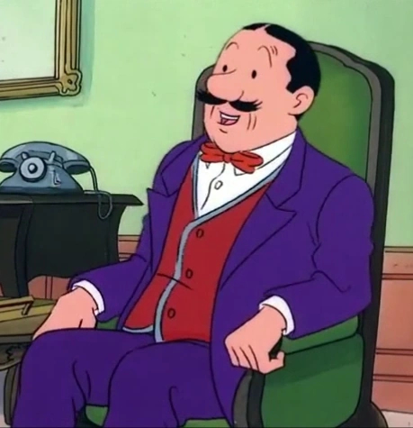

Get to know the iconic characters from Tintin's adventures.
Snowy

Snowy is Tintin's loyal fox terrier, always by his side through thick and thin.
Snowy, known as Milou in the original French version, is not only a faithful companion but also displays remarkable intelligence and bravery, often saving Tintin from perilous situations.
Captain Haddock
Captain Archibald Haddock is Tintin's fiery-tempered but loyal friend, known for his iconic curses and love of whiskey.
Captain Haddock inherited Marlinspike Hall and often joins Tintin on adventures, despite his grumbling.
Professor Calculus

Professor Cuthbert Calculus is a brilliant but eccentric inventor with hearing problems.
He invents groundbreaking devices like the Moon rocket, though his absent-mindedness often causes chaos.
Bianca Castafiore

The Milanese Nightingale, a world-famous opera singer with a voice that shatters glass.
Her dramatic entrances often complicate Tintin's adventures, much to Captain Haddock's dismay.
Thomson & Thompson

The bumbling twin detectives who never solve a case but always stick together.
Identical in appearance (except for their mustache shapes), they often inadvertently help Tintin crack mysteries.
General Alcazar

A revolutionary leader from the fictional South American country of San Theodoros.
Known for his ever-changing alliances and comically chaotic leadership style.
Roberto Rastapopoulos

Tintin's arch-nemesis, a ruthless criminal mastermind and film producer.
He appears in multiple adventures, orchestrating schemes ranging from art theft to human trafficking.
Chang Chong-Chen

A young Chinese boy who becomes Tintin's loyal friend in *The Blue Lotus*.
Chang helps Tintin expose a dangerous opium-smuggling ring in Shanghai.
Nestor

The ever-patient butler of Marlinspike Hall, Captain Haddock's mansion.
Nestor calmly manages the chaos caused by Haddock, Calculus, and Tintin's adventures.
Jolyon Wagg

An overly enthusiastic insurance salesman who annoys Captain Haddock endlessly.
Wagg's relentless cheerfulness and terrible jokes make him one of Haddock's least favorite people.